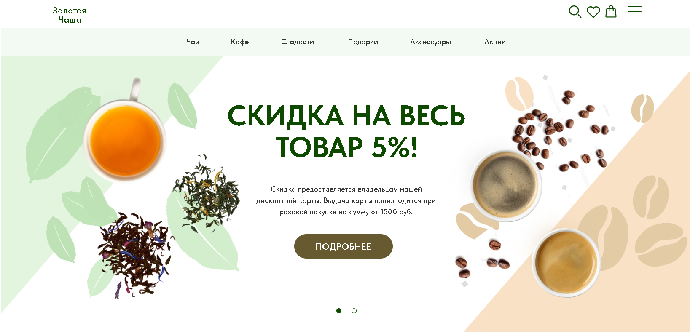

Нужен новый сайт с нуля
Рекомендация: Веб-дизайн или разработка на Tilda — в зависимости от того, нужен макет в Figma или готовый сайт на платформе.
Услуги · WINTER.DESIGN
Проектирую современные сайты для бизнеса: от структуры и UX до визуального дизайна, адаптивных версий и запуска.
Каждый проект строится вокруг целей, аудитории и понятного пользовательского сценария.
Figma, Tilda, адаптив и AI-инструменты — полный цикл без разрывов между дизайном и запуском.
Выберите направление — на отдельных страницах подробно описаны формат работы, этапы и примеры проектов.
Проектирование визуально сильных и понятных сайтов с учётом задач бизнеса, аудитории и пользовательских сценариев.
ПодробнееРазработка структуры, прототипов и интерфейсов, которыми удобно пользоваться на компьютере, планшете и смартфоне.
ПодробнееОдностраничные сайты для презентации продукта, услуги, мероприятия или рекламного предложения.
ПодробнееОбновление устаревшего сайта: визуальный стиль, структура, навигация, адаптивность и общее восприятие.
ПодробнееСоздание и запуск сайтов на Tilda: дизайн, адаптивные версии, формы, базовая SEO-настройка и подключение сервисов.
ПодробнееИспользование AI-инструментов для ускорения анализа, проектирования, работы с текстами и разработки под контролем дизайнера.
ПодробнееЧетыре частых сценария — с рекомендациями и ссылками на подходящие страницы.
Рекомендация: Веб-дизайн или разработка на Tilda — в зависимости от того, нужен макет в Figma или готовый сайт на платформе.
Рекомендация: Дизайн лендинга — для акции, продукта, услуги или рекламной кампании.
Рекомендация: Редизайн сайта — обновление визуала, структуры и пользовательского опыта.
Рекомендация: UX/UI-дизайн — прототипирование, сценарии и проработка интерфейса.
Базовые этапы, которые помогают довести проект от задачи до готового результата.
Разбираю цели проекта, контекст бизнеса и ожидаемый результат, чтобы дизайн решал конкретную задачу.
Учитываю, кто будет пользоваться сайтом, какие действия важны и что должно быть понятно с первых секунд.
Проектирую логику страниц и блоков до визуального дизайна, чтобы согласовать сценарий заранее.
Подбираю стилистику, типографику и композиционные решения под бренд и задачу проекта.
Готовлю версии для desktop, tablet и mobile, чтобы сайт оставался удобным на разных экранах.
Организую макет, материалы и пояснения для передачи в вёрстку, сборку на Tilda или публикации.
Понятный поэтапный сценарий — от первого обсуждения до передачи результата.
Уточняем цели, сроки, формат и ожидания от будущего сайта или дизайна.
Изучаю нишу, контент и пользовательские задачи, чтобы выстроить логику решения.
Собираю каркас страниц и согласовываю порядок блоков до этапа визуала.
Разрабатываю визуальный стиль, типографику и оформление ключевых экранов.
Дорабатываю макет для планшетов и смартфонов с сохранением логики и читаемости.
Передаю финальные материалы, пояснения и рекомендации для следующего этапа запуска.
Реальные принципы работы — без шаблонных обещаний и выдуманных цифр.
Каждый проект ведётся с вниманием к задаче, а не по универсальному шаблону.
Сначала логика и сценарии пользователя, затем визуал — чтобы сайт был понятным.
Прорабатываю версии для разных устройств, включая узкие экраны от 360px.
Работаю в Figma и Tilda, использую Cursor AI и Adobe — там, где это ускоряет и улучшает результат.
Обсуждаем этапы, правки и решения прозрачно — без лишней сложности в процессе.
Финальные решения по структуре, визуалу и качеству принимаются вручную, даже при использовании AI.
Четыре разных формата — от корпоративного сайта до лендинга и интернет-магазина.

Концепт редизайна банковского сайта с акцентом на UX и визуальную ясность.
Подробнее


Стоимость зависит от типа проекта, количества страниц, глубины проработки UX/UI и необходимости адаптивных версий. После обсуждения задачи предложу ориентир по бюджету.
На сроки влияют объём проекта, скорость согласований, наличие готового контента и выбранный формат — только дизайн или дизайн с реализацией на Tilda.
Да. Могу подготовить макет в Figma с адаптивными экранами и передать его для дальнейшей вёрстки или сборки вашей командой.
Да. Адаптив для desktop, tablet и mobile входит в работу над дизайном, чтобы интерфейс оставался удобным на всех устройствах.
Да. Для обновления действующего проекта подойдёт редизайн или точечная UX/UI-проработка — в зависимости от масштаба изменений.
Напишите о задаче в свободной форме — помогу определить подходящий формат: веб-дизайн, лендинг, UX/UI, редизайн или разработку на Tilda.
Расскажите, какой сайт или дизайн вам нужен. Я помогу определить подходящий формат работы и предложу следующий шаг.
Расскажите о задаче. Оставьте телефон или e-mail — я свяжусь с вами, чтобы обсудить формат работы и предложить оптимальное решение.